Ogni contributo verifica fonti primarie e indica cosa cambia per il destinatario. Mai marketing, mai pareri travestiti.
Il furto commesso nelle scale o nell'atrio del condominio è punito come il furto in casa? La questione ruota sulla nozione di 'privata dimora' dell'art. 624-bis c.p. La giurisprude…
L'esenzione IMU per gli immobili degli enti del Terzo Settore non è automatica. La legge la subordina a tre condizioni che devono coesistere: chi possiede l'immobile, come lo usa e…
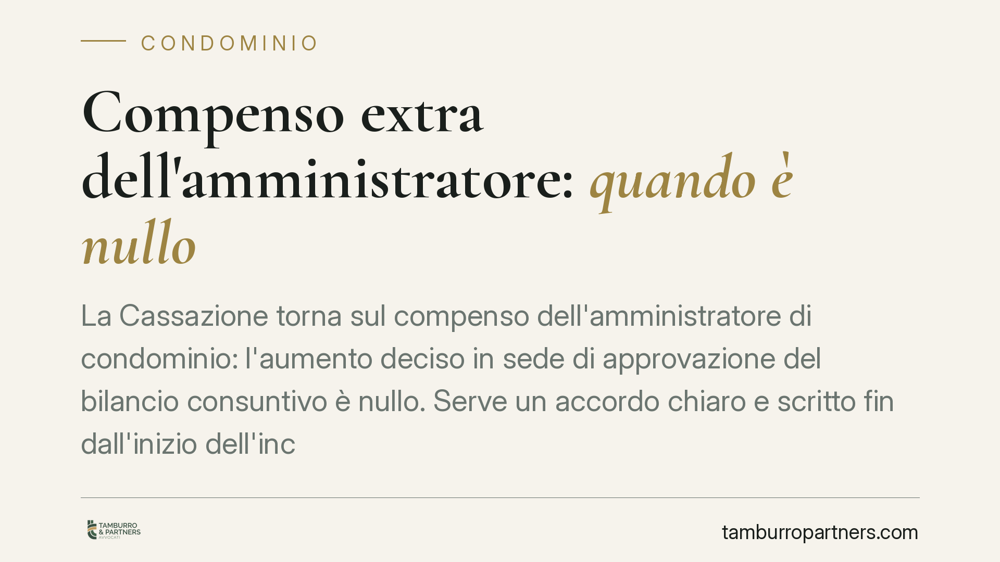
La Cassazione torna sul compenso dell'amministratore di condominio: l'aumento deciso in sede di approvazione del bilancio consuntivo è nullo. Serve un accordo chiaro e scritto fin …
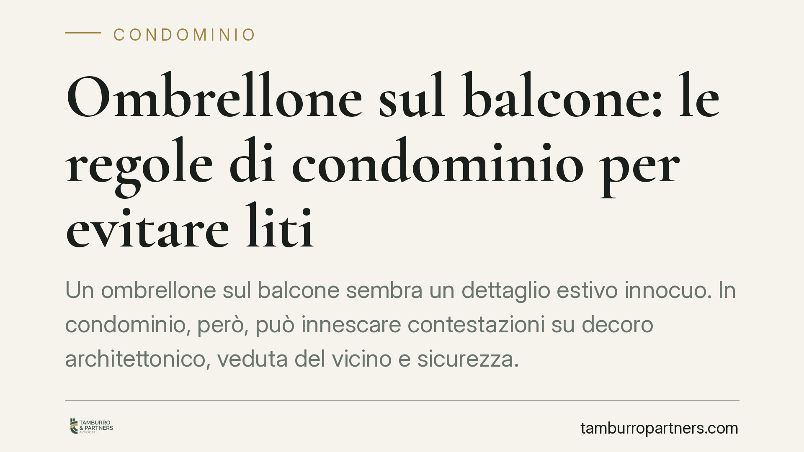
Un ombrellone sul balcone sembra un dettaglio estivo innocuo. In condominio, però, può innescare contestazioni su decoro architettonico, veduta del vicino e sicurezza. Sapere quand…
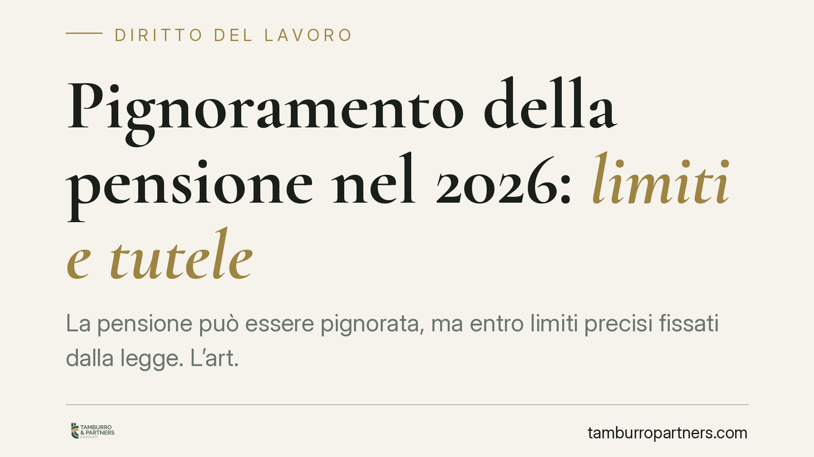
Chi percepisce una pensione e ha un debito si chiede quanto possa essergli sottratto. La risposta cambia a seconda del punto in cui avviene il prelievo: presso l'ente previdenziale…
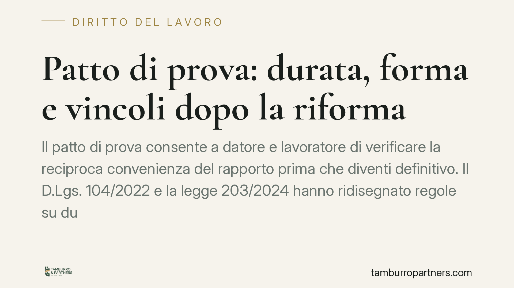
Il patto di prova consente a datore e lavoratore di verificare la reciproca convenienza del rapporto prima che diventi definitivo. Il D.Lgs. 104/2022 e la legge 203/2024 hanno ridi…
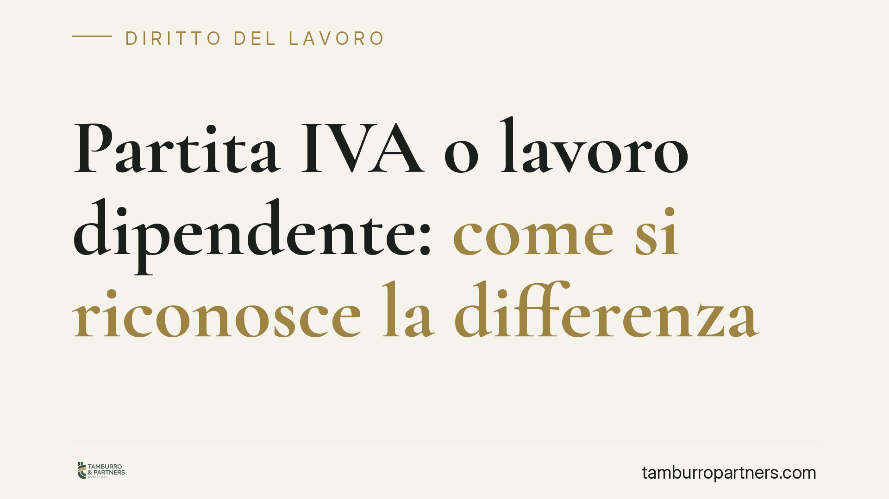
Avere una partita IVA non basta a escludere un rapporto di lavoro subordinato. Per i giudici conta la sostanza: se il committente esercita un potere direttivo, gerarchico e organiz…
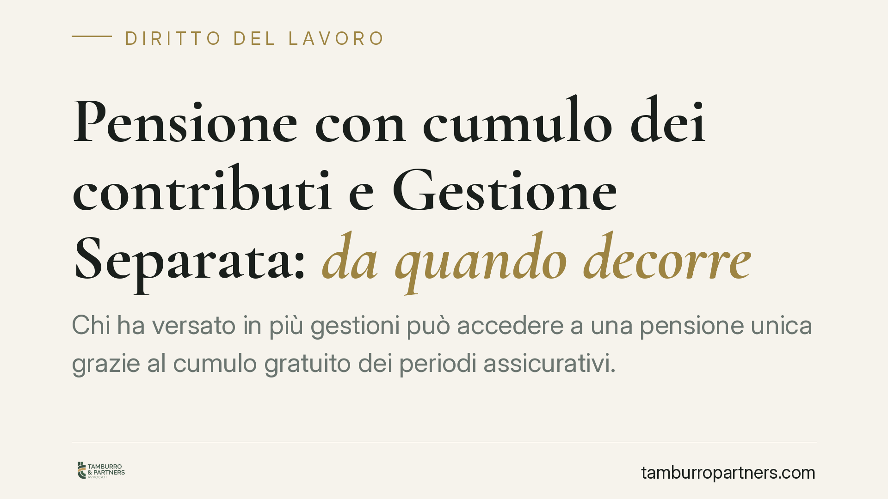
Chi ha versato in più gestioni può accedere a una pensione unica grazie al cumulo gratuito dei periodi assicurativi. La questione pratica ruota attorno a un dettaglio decisivo: il …
Sempre più ristoranti aggiungono al conto un "contributo volontario" preimpostato, spesso presentato come già dovuto. Quando l'importo compare senza una scelta effettiva del client…
Chi ristruttura il proprio appartamento e partecipa a lavori sulle parti comuni può cumulare le detrazioni? Sì, ma i plafond restano separati. Nel 2025 il quadro delle aliquote è c…
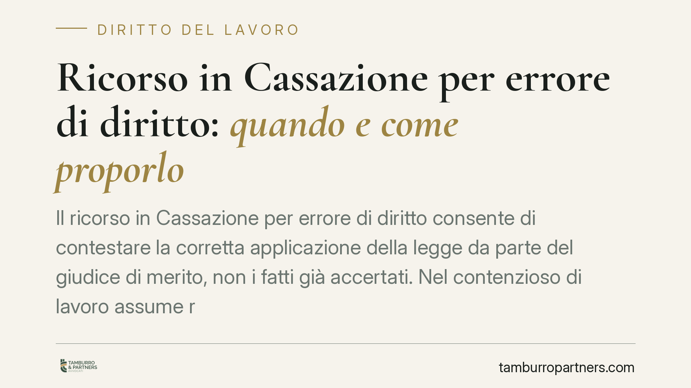
Il ricorso in Cassazione per errore di diritto consente di contestare la corretta applicazione della legge da parte del giudice di merito, non i fatti già accertati. Nel contenzios…
Chi si dimette non ha di regola diritto alla NASpI, che spetta a chi perde il lavoro involontariamente. Secondo indicazioni di prassi recenti, però, le dimissioni motivate da ragio…
Non presentarsi alla mediazione obbligatoria non è una scelta neutra. Il giudice può trarne argomenti di prova contro la parte assente, condannarla al versamento a favore dell'Erar…
Ammalarsi durante le ferie all'estero solleva un dubbio ricorrente: quei giorni restano ferie o si convertono in malattia? La risposta incide sul diritto al riposo tutelato dalla C…
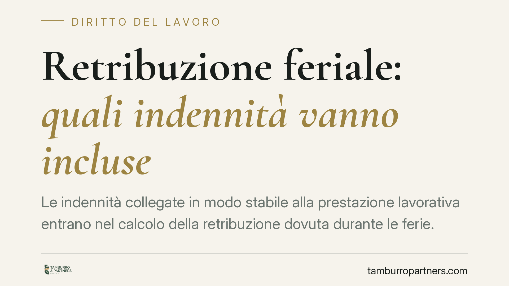
Le indennità collegate in modo stabile alla prestazione lavorativa entrano nel calcolo della retribuzione dovuta durante le ferie. È un principio consolidato dalla giurisprudenza e…
L'acquirente firma il preliminare, versa la caparra e poi la banca nega il mutuo: l'immobile presenta un abuso edilizio non dichiarato. Chi risponde delle spese e della trattativa …
Con la sentenza 6620 del 19 marzo 2026 la seconda sezione della Cassazione ribadisce un principio dagli effetti concreti: la nullità di una delibera assembleare può essere fatta va…
Un padre dona un bene alla figlia. Anni dopo scopre di non esserne il genitore biologico e chiede di annullare la liberalità. La Cassazione dice no: la donazione resta valida, salv…
Una misura pensata per incentivare il lavoro agile nelle aree montane è, secondo le cronache di settore, priva di efficacia operativa: mancherebbero i decreti attuativi che ne defi…
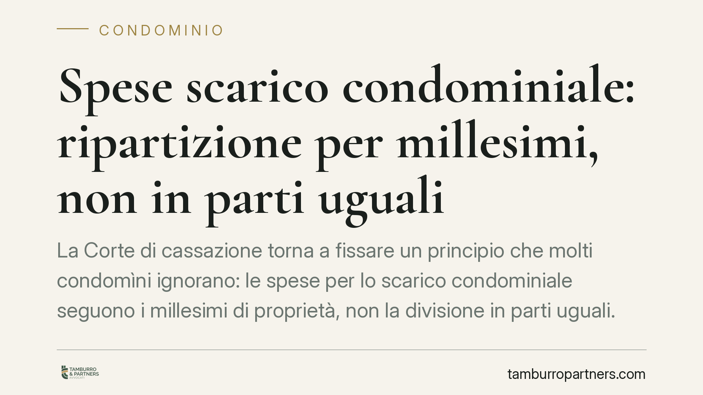
La Corte di cassazione torna a fissare un principio che molti condomìni ignorano: le spese per lo scarico condominiale seguono i millesimi di proprietà, non la divisione in parti u…
Affittare una casa senza registrare il contratto espone a rischi concreti: nullità del rapporto, sanzioni dell'Agenzia delle Entrate e perdita delle tutele processuali. La discipli…
Alcune commissioni tributarie stanno affrontando il tema della tassazione dei creator digitali, provando a stimare i ricavi di post e storie quando manca una contabilità chiara. Ol…
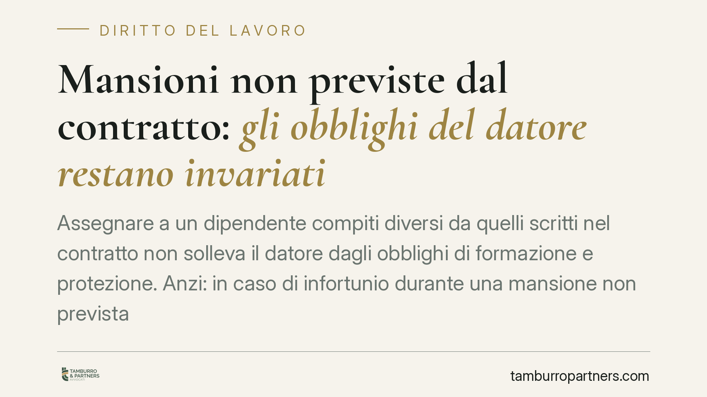
Quando un dipendente svolge compiti diversi da quelli indicati nel contratto, il datore di lavoro non può considerarsi esonerato dagli obblighi di formazione e sicurezza. La Cassaz…
Un dato ridimensiona la retorica sulla stagionalità: solo il 10% dei contratti a tempo determinato serve davvero a esigenze stagionali. L'80% è usato per testare candidati o coprir…
Il padre che si dimette dopo il congedo di paternità ha diritto a non lavorare il periodo di preavviso? La Cassazione ha risposto applicando la norma anteriore al 2022, poi modific…
Una recente pronuncia della Corte d'Appello di Bologna torna sul rapporto tra difesa del lavoratore e reintegrazione nel licenziamento disciplinare. Il punto centrale: la mancata c…
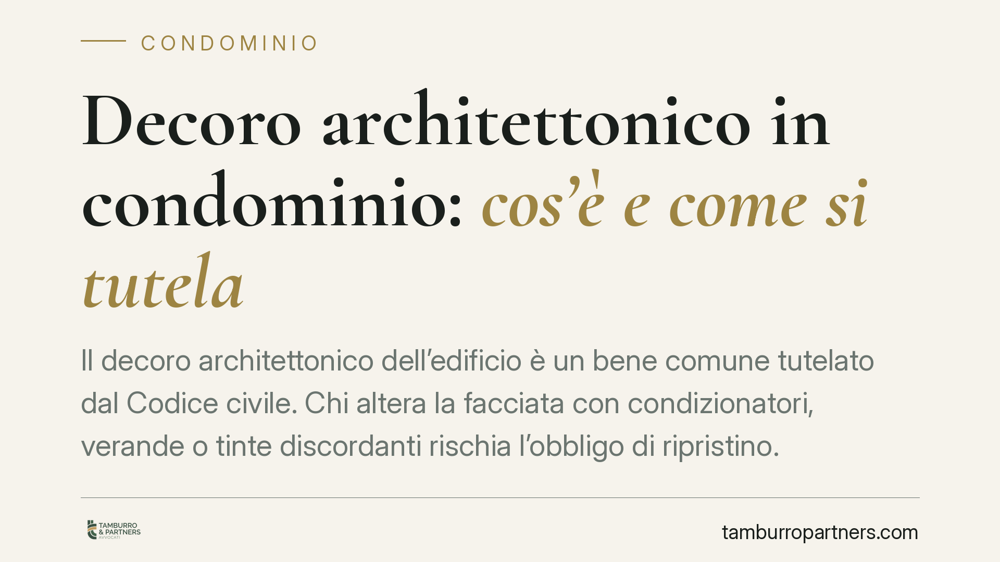
Il decoro architettonico dell'edificio è un bene comune tutelato dal Codice civile. Chi altera la facciata con condizionatori, verande o tinte discordanti rischia l'obbligo di ripr…
Molti lavoratori si chiedono se sia lecito svolgere un secondo impiego oltre a quello principale. La regola generale è la libertà: il datore di lavoro non può imporre divieti gener…
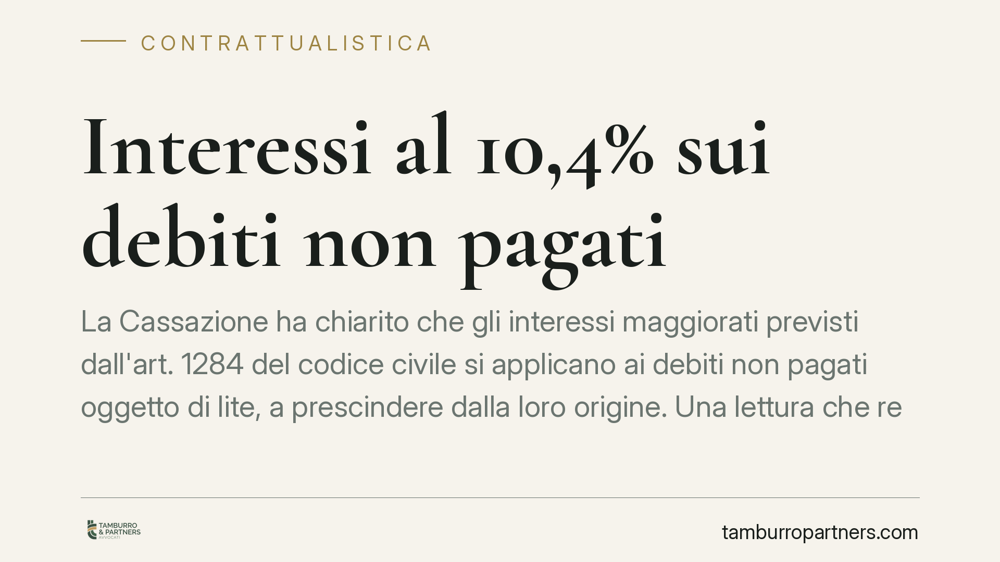
La Cassazione ha chiarito che gli interessi maggiorati previsti dall'art. 1284 del codice civile si applicano ai debiti non pagati oggetto di lite, a prescindere dalla loro origine…
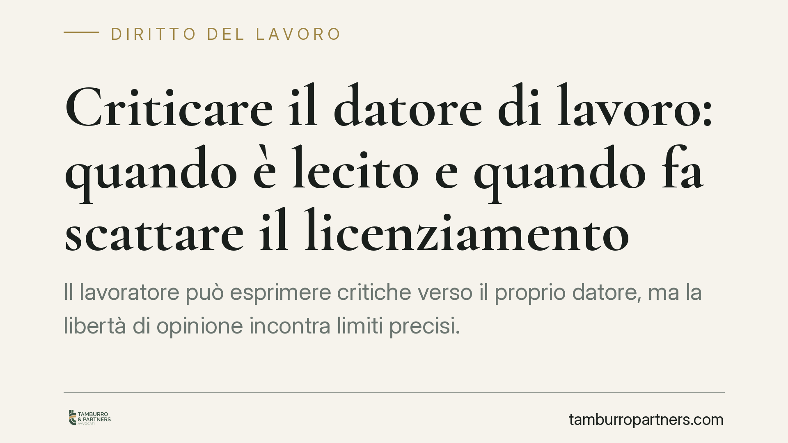
Il dipendente conserva la libertà di manifestare il proprio pensiero, anche critico, verso l'azienda. Ma quel diritto non è illimitato: superata una certa soglia, la critica può tr…